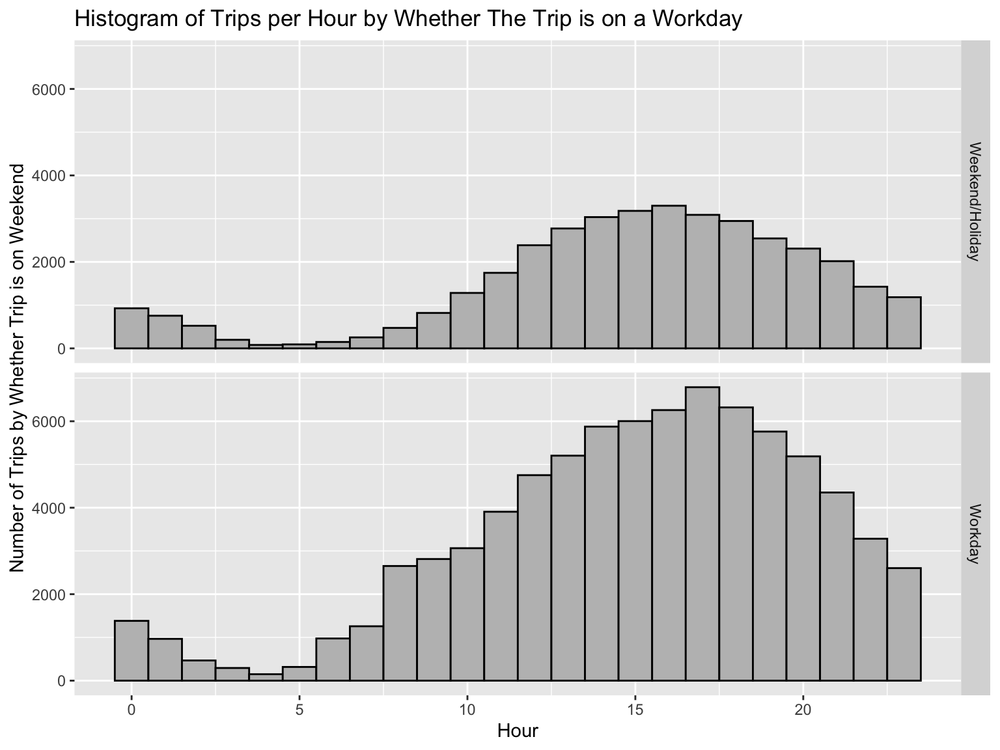

10 Demographic Exploration of ValleyBike Users
10.1 Motivations and Initial Summary
The motivation behind this project is that it has only recently become possible to obtain demographic data of ValleyBike users and connect it to the existing data on the number of trips. Thus, it has become possible to gather information on whether different demographic factors influence frequency and duration of trips. This can help ValleyBike leadership understand who exactly are its largest clients and what they use the bikes for, which can then influence the location of future stations and other changes to the ValleyBike structure.
In total, there are 16589 users and 112011 trips by those users from June 2018 to October 2020. Trips shorter than 2 minutes or longer than 4 hours were excluded from this analysis. The central question of this project is what patterns we can glean from different demographic information about users, as well as some of the trip characteristics that haven’t been explore before, e.g. # of trips by hour and whether the day of the trip falls on a weekend/holiday. For this project, all trips shorter than 2 minutes and longer than 4 hours are excluded from the dataset.
10.2 Tables and Plots of Trips by User Age
| Age Group | Proportion of Users | Proportion of Trips | Median Number of Trips Per User | Avg Number of Trips per User | Median Trip Duration, mins |
|---|---|---|---|---|---|
| 18-23 | 0.37 | 0.38 | 3 | 7.41 | 17.83 |
| 23-30 | 0.26 | 0.21 | 2 | 5.61 | 20.33 |
| 30-40 | 0.16 | 0.18 | 2 | 8.36 | 20.89 |
| 40-50 | 0.08 | 0.10 | 2 | 8.73 | 19.42 |
| 50-60 | 0.08 | 0.09 | 2 | 7.97 | 22.57 |
| 60+ | 0.05 | 0.03 | 2 | 4.91 | 24.00 |
| Total | 1.00 | 1.00 | 2 | 7.12 | 19.67 |
By age, we see that most users are either 18-23 or 23-30. Proportion of trips and proportion of users are very close for all groups. Although average numbers of trips per user differ, a comparison with the medians shows that this is mostly caused by a few users who take a large number of trips, while the median is only 2-3 trips. It appears that the youngest group (18-23) take the shortest trips with the median of 17.8 minutes, while users in older groups take trips of 20 minutes or longer. This may reflect a self-selection effect, where the older users who still bike are more dedicated to it than an average individual of that age.
For this and future subsections, the second plot of trips per hour is normalized to account for different sizes of the groups. However, smaller groups will tend to have bigger shifts hour-to-hour on that plot. Overall, there doesn’t seem to be much difference in terms of different age groups, aside from the older users exhibiting a sharper drop in usage after 7pm. The usage starts to increase around 6-8 and reaches its peak in the afternoon and early evening.
10.3 Tables and Plots by Gender
| Gender | Proportion of Users | Proportion of Trips | Median Number of Trips Per User | Avg Number of Trips per User | Median Trip Duration, mins |
|---|---|---|---|---|---|
| Male | 0.20 | 0.44 | 4 | 15.80 | 17.17 |
| Female | 0.07 | 0.13 | 3 | 13.81 | 18.33 |
| Missing | 0.73 | 0.43 | 2 | 4.16 | 22.58 |
| Total | 1.00 | 1.00 | 2 | 7.12 | 19.67 |
It is important to note that, although 73% of ValleyBike registered users have not stated their gender, only 45% of all trips were taken by these users. Known female and male users, on the other hand, are only 7% and 20% of all users, but complete 13% and 42% of all trips, respectively. Male and female users generally take more trips than users whose gender is missing, but the length of their trips is slightly shorter, with medians of 17 and 18 minutes compared to 22.6 minutes.
The users who do not include their gender in the profile. As shown in a future section, the “Missing” category serves as a reflection of users with specific account type, who bike less, but for longer periods.
10.4 Tables by Gender and Age
| Female | Male | Missing | |
|---|---|---|---|
| 18-23 | 205 | 860 | 4294 |
| 23-30 | 206 | 686 | 2899 |
| 30-40 | 167 | 521 | 1534 |
| 40-50 | 115 | 296 | 704 |
| 50-60 | 121 | 280 | 733 |
| 60+ | 82 | 199 | 297 |
| Demographic Group | Proportion of Users | Proportion of Trips | Median Number of Trips Per User | Avg Number of Trips per User | Median Trip Duration, mins |
|---|---|---|---|---|---|
| Female 18-23 | 0.014 | 0.01 | 3.0 | 6.68 | 21.17 |
| Female 23-30 | 0.015 | 0.02 | 3.0 | 11.10 | 13.42 |
| Female 30-40 | 0.012 | 0.03 | 4.0 | 17.20 | 20.00 |
| Female 40-50 | 0.010 | 0.03 | 4.0 | 23.01 | 16.92 |
| Female 50-60 | 0.009 | 0.03 | 4.0 | 21.55 | 20.92 |
| Female 60+ | 0.007 | 0.01 | 2.5 | 5.42 | 22.83 |
| Male 18-23 | 0.058 | 0.15 | 6.0 | 18.31 | 15.43 |
| Male 23-30 | 0.047 | 0.08 | 5.0 | 11.83 | 17.05 |
| Male 30-40 | 0.036 | 0.10 | 4.0 | 19.86 | 18.42 |
| Male 40-50 | 0.021 | 0.05 | 3.0 | 15.57 | 17.50 |
| Male 50-60 | 0.020 | 0.05 | 3.0 | 15.81 | 20.46 |
| Male 60+ | 0.016 | 0.02 | 3.0 | 9.51 | 19.00 |
| Missing 18-23 | 0.295 | 0.22 | 2.0 | 5.32 | 19.75 |
| Missing 23-30 | 0.203 | 0.11 | 2.0 | 3.78 | 23.83 |
| Missing 30-40 | 0.107 | 0.05 | 2.0 | 3.50 | 25.42 |
| Missing 40-50 | 0.051 | 0.02 | 2.0 | 3.26 | 27.17 |
| Missing 50-60 | 0.054 | 0.02 | 2.0 | 2.60 | 27.83 |
| Missing 60+ | 0.025 | 0.01 | 1.0 | 1.76 | 34.42 |
| Total | 1.000 | 1.00 | 2.0 | 7.12 | 19.67 |
If we look at both gender and age, we see that the patterns of the number of trips per user and median trip durations differ by gender. The oldest user group (60+) takes the fewest trips for all three categories. However, the reverse is not always the case. While the median number of trips for younger male users is the highest, middle age female users tend to take more trips than the younger female users, while for the “Missing” group, the median is almost flat. However, since the female age group is the smallest, their summary numbers are more likely to fluctuate than the numbers for the larger male and missing groups. For trip durations, the oldest users take either average length trips (for males) or the longest trips (for females and especially for the missing group). Although the youngest users in male and missing categories take the shortest trips, the female bikers are on the high end, with median trip duration of 19.5 minutes, longer than 18-23 users in the other two groups and the second longest trip duration among female age groups. However, female users 23-30 have the shortest median trip duration out of all groups, which implies that the effect is caused by in-group variability and not by gender-specific biking trends. Since a significant number of trips involves secondary stops, the median duration would be higher if round trips with a stop get counted as one trip, while the average number of trips would be correspondingly lower.
10.5 Tables and Plots by User Location
| Location | Proportion of Users | Proportion of Trips | Median Number of Trips Per User | Avg Number of Trips per User | Median Trip Duration, mins |
|---|---|---|---|---|---|
| Amherst | 0.07 | 0.12 | 4 | 12.53 | 12.58 |
| Northampton | 0.07 | 0.19 | 4 | 18.63 | 16.25 |
| Other | 0.74 | 0.49 | 2 | 4.71 | 21.25 |
| Holyoke | 0.05 | 0.09 | 4 | 13.80 | 21.92 |
| Springfield | 0.05 | 0.08 | 3 | 11.30 | 25.67 |
| Easthampton | 0.02 | 0.03 | 4 | 7.89 | 26.25 |
| Total | 1.00 | 1.00 | 2 | 7.12 | 19.67 |
User location represents the location of the home address inputted at the creation of the account. Other category includes all addresses outside of the top 5, which are listed separately. Thus, “Other” category would include both tourists from areas such as Boston and New York and those living in towns in the Pioneer Valley, such as Hadley. One of the most interesting findings of the table is that, despite 74% of user locations falling under “Other”, only 49% of trips are taken by those users, with the 5 towns with the greatest number of users accounting for the share of trips that is twice as big as their share of users. Although there exists some variation by town, users in the listed towns take more and shorter trips than user in “Other” category. This would be the case if the users with “Other” location used bikes for occasional recreation, while users in towns with several ValleyBike stations were more likely to use them for shorter purpose-driven trips around town.
10.6 Tables and Plots by User Type
| User Account Type | Proportion of Users | Proportion of Trips | Median Number of Trips Per User | Avg Number of Trips per User | Median Trip Duration, mins |
|---|---|---|---|---|---|
| IndividualUserEntity | 0.12 | 0.29 | 4 | 17.75 | 15.83 |
| MobileUserEntity | 0.87 | 0.70 | 2 | 5.74 | 21.42 |
| OccasionalUserEntity | 0.01 | 0.01 | 1 | 2.66 | 26.83 |
| Total | 1.00 | 1.00 | 2 | 7.12 | 19.67 |
This table focuses on different types of accounts. While “MobileUserEntity” is by far the largest in terms of both users and trips, “IndividualUserEntity” users take over twice as many trips, with a median trip being shorter than for a median “MobileUserEntity” user’s trip. This is similar to a pattern exhibited by Male and Female vs. Missing divide for gender, which is not an accident for this dataset, as we’ll see later.
10.7 Tables and Plots by Whether the Trip is on a Workday
| Type of Day | Proportion of Trips | Median Trip Duration, mins |
|---|---|---|
| Workday | 0.68 | 17.98 |
| Weekend/Holiday | 0.32 | 23.08 |
| Total | 1.00 | 19.67 |

It is important to note that, other than weekends, the holidays include Independence Day, Labor Day, and Memorial Day. We see that the peak bike usage plot shifts to the right on weekends, representing that people use bikes less in the morning on weekends and holidays. The fraction of the trips taken on weekends is 0.31, which is slightly higher than the expected $2/7 $0.29. In terms of duration, a median holiday trip is also longer than a median weekday trip, 23 vs 18 minutes.
10.8 Table Summary of Most Common Visited Stations by User Location
Tables included below list the number of visited stations (as either a starting station or an end station). The proportion of trips variable is the proportion of all trips for users who put that place as their location which includes this station. Since trips are between two, usually different, locations, the total of the proportion of all trips may add up to > 1. We see that users living in one of the towns with ValleyBike stations tend to most commonly visit stations in that town, with stations from other towns usually outside of the list of top 10 stations. For users who put their locations as “Other”, the most often visited stations are UMass-connected stations, and stations connected to town centers and transportation such as Amherst Town Hall and Northampton Train Stations. This strengthens the interpretation that many of these users come to a town with ValleyBike station through different means for a limited time and then use a bike to move around the area. The prevalence of NA stations for trips for all users likely stems from secondary stops.
| station | city | total number of trips | proportion of trips |
|---|---|---|---|
| UMass Southwest | Amherst | 9241 | 0.161 |
| NA | NA | 8026 | 0.140 |
| UMass Knowlton | Amherst | 6371 | 0.111 |
| Amherst Town Hall | Amherst | 5998 | 0.104 |
| UMass Haigis Mall | Amherst | 5891 | 0.103 |
| Northampton Train Station | Northampton | 5003 | 0.087 |
| Kendrick Park | Amherst | 3970 | 0.069 |
| South End/Main Street | Springfield | 3878 | 0.067 |
| North Pleasant Street | Amherst | 3490 | 0.061 |
| Mackenzie Field | Holyoke | 3384 | 0.059 |
| UMass Central Residential Area | Amherst | 3064 | 0.053 |
| Main Street/Bridge Street | Northampton | 3012 | 0.052 |
| UMass ILC | Amherst | 2917 | 0.051 |
| Pulaski Park/Downtown | Northampton | 2749 | 0.048 |
| State St/Mass Central Rail Trail | Northampton | 2689 | 0.047 |
| Florence Center | Northampton | 2515 | 0.044 |
| Main Street/Court House | Northampton | 2481 | 0.043 |
| Holyoke Medical Center Station | Holyoke | 2438 | 0.042 |
| Live Well Springfield Station | Springfield | 2367 | 0.041 |
| Court Square | Springfield | 2214 | 0.039 |
| station | city | total number of trips | proportion of trips |
|---|---|---|---|
| Northampton Train Station | Northampton | 5002 | 0.217 |
| Pulaski Park/Downtown | Northampton | 4682 | 0.204 |
| State St/Mass Central Rail Trail | Northampton | 4642 | 0.202 |
| Florence Center | Northampton | 3979 | 0.173 |
| Jackson Street | Northampton | 3207 | 0.139 |
| Northampton High School | Northampton | 3024 | 0.131 |
| Village Hill/State Hospital | Northampton | 2763 | 0.120 |
| Main Street/Court House | Northampton | 2391 | 0.104 |
| Florence Bank Station | Northampton | 2356 | 0.102 |
| Main Street/Bridge Street | Northampton | 2351 | 0.102 |
| YMCA/Childs Park | Northampton | 1785 | 0.078 |
| John M Greene Hall/Smith College | Northampton | 1622 | 0.071 |
| NA | NA | 1523 | 0.066 |
| Forbes Library | Northampton | 1394 | 0.061 |
| Amherst Town Hall | Amherst | 953 | 0.041 |
| Cooley Dickinson Health Care | Northampton | 647 | 0.028 |
| Rail Trail @ Millside Park | Easthampton | 637 | 0.028 |
| UMass Haigis Mall | Amherst | 612 | 0.027 |
| UMass Knowlton | Amherst | 386 | 0.017 |
| UMass Southwest | Amherst | 383 | 0.017 |
| station | city | total number of trips | proportion of trips |
|---|---|---|---|
| Mackenzie Field | Holyoke | 3592 | 0.326 |
| Holyoke Medical Center Station | Holyoke | 3452 | 0.313 |
| The Pedlar Station/Crosier Field | Holyoke | 2960 | 0.269 |
| South Holyoke | Holyoke | 1950 | 0.177 |
| Pleasant Station | Holyoke | 1607 | 0.146 |
| Downtown | Holyoke | 1521 | 0.138 |
| Depot Square | Holyoke | 1368 | 0.124 |
| Springdale Park | Holyoke | 1029 | 0.093 |
| NA | NA | 565 | 0.051 |
| Eink Station | Holyoke | 454 | 0.041 |
| Northampton Train Station | Northampton | 429 | 0.039 |
| Pulaski Park/Downtown | Northampton | 272 | 0.025 |
| State St/Mass Central Rail Trail | Northampton | 185 | 0.017 |
| Rail Trail @ Union Street | Easthampton | 177 | 0.016 |
| Rail Trail @ Millside Park | Easthampton | 170 | 0.015 |
| Holyoke Community College | Holyoke | 168 | 0.015 |
| Florence Center | Northampton | 156 | 0.014 |
| John M Greene Hall/Smith College | Northampton | 153 | 0.014 |
| Jackson Street | Northampton | 147 | 0.013 |
| City Hall | Easthampton | 134 | 0.012 |
| Florence Bank Station | Northampton | 134 | 0.012 |
| station | city | total number of trips | proportion of trips |
|---|---|---|---|
| North Pleasant Street | Amherst | 4558 | 0.327 |
| Amherst Town Hall | Amherst | 3128 | 0.224 |
| UMass Knowlton | Amherst | 2997 | 0.215 |
| Kendrick Park | Amherst | 2657 | 0.190 |
| NA | NA | 2351 | 0.168 |
| UMass Haigis Mall | Amherst | 2306 | 0.165 |
| UMass Southwest | Amherst | 2105 | 0.151 |
| East Hadley Road | Amherst | 1812 | 0.130 |
| UMass ILC | Amherst | 1592 | 0.114 |
| Northampton Train Station | Northampton | 696 | 0.050 |
| UMass Central Residential Area | Amherst | 655 | 0.047 |
| State St/Mass Central Rail Trail | Northampton | 481 | 0.034 |
| Pulaski Park/Downtown | Northampton | 437 | 0.031 |
| Jackson Street | Northampton | 432 | 0.031 |
| Main Street/Bridge Street | Northampton | 422 | 0.030 |
| Main Street/Court House | Northampton | 419 | 0.030 |
| Village Hill/State Hospital | Northampton | 206 | 0.015 |
| John M Greene Hall/Smith College | Northampton | 121 | 0.009 |
| Forbes Library | Northampton | 102 | 0.007 |
| Florence Center | Northampton | 65 | 0.005 |
| station | city | total number of trips | proportion of trips |
|---|---|---|---|
| Mason Square Library | Springfield | 3144 | 0.326 |
| South End/Main Street | Springfield | 2538 | 0.263 |
| NA | NA | 2384 | 0.247 |
| Live Well Springfield Station | Springfield | 2123 | 0.220 |
| Mercy Medical Center Station | Springfield | 1398 | 0.145 |
| Court Square | Springfield | 1291 | 0.134 |
| MGM Springfield | Springfield | 859 | 0.089 |
| CFWM @ Stearns Square Station | Springfield | 856 | 0.089 |
| STCC - Springfield Armory | Springfield | 816 | 0.085 |
| Baystate Health/Chestnut Street | Springfield | 547 | 0.057 |
| Basketball Hall of Fame | Springfield | 500 | 0.052 |
| Holyoke Medical Center Station | Holyoke | 302 | 0.031 |
| Mackenzie Field | Holyoke | 208 | 0.022 |
| Amherst Town Hall | Amherst | 205 | 0.021 |
| Northampton Train Station | Northampton | 197 | 0.020 |
| Pulaski Park/Downtown | Northampton | 144 | 0.015 |
| Baystate Health/Main Street | Springfield | 137 | 0.014 |
| The Pedlar Station/Crosier Field | Holyoke | 136 | 0.014 |
| Main Street/Bridge Street | Northampton | 133 | 0.014 |
| South Holyoke | Holyoke | 110 | 0.011 |
10.9 Other Tables
##
## IRU MRU ORU
## IndividualUserEntity 1518 0 0
## MobileUserEntity 346 12142 0
## OccasionalUserEntity 0 0 193##
## Female Male Missing
## IRU 639 1114 111
## MRU 257 1728 10157
## ORU 0 0 193These tables show distribution of dtype variable by the other membership type and gender. We see that “ORU” and “OccasionalUserEntity” are identical, while “IRU” mostly corresponds to “IndividualUserEntity” and “MRU” to “MobileUserEntity”. In addition, almost all users with gender listed as “Missing” fall into “MRU” account category, potentially explaining differences in usage patterns as stemming partially from the account type.
##
## Female Male Missing
## Amherst 94 229 658
## Easthampton 30 63 241
## Holyoke 67 251 367
## Northampton 205 392 475
## Other 387 1649 8373
## Springfield 113 258 347## Female Male Missing
##
## Amherst 0.096 0.233 0.671
## Easthampton 0.090 0.189 0.722
## Holyoke 0.098 0.366 0.536
## Northampton 0.191 0.366 0.443
## Other 0.037 0.158 0.804
## Springfield 0.157 0.359 0.483The gender distribution of users from different locations is generally similar, with “Missing” overrepresented or users with “Other” location and underrepresented for users from Springfield and Northampton. Males are overrepresented over females compared to the rest of the locations for user from Holyoke and locations listed as “Other.”
##
## IndividualUserEntity MobileUserEntity OccasionalUserEntity
## Amherst 214 767 0
## Easthampton 54 280 0
## Holyoke 136 549 0
## Northampton 405 667 0
## Other 527 9689 193
## Springfield 182 536 0##
## IRU MRU ORU
## Amherst 260 721 0
## Easthampton 62 272 0
## Holyoke 168 517 0
## Northampton 478 594 0
## Other 696 9520 193
## Springfield 200 518 0##
## IndividualUserEntity MobileUserEntity OccasionalUserEntity
## 18-23 310 5049 0
## 23-30 272 3519 0
## 30-40 302 1920 0
## 40-50 196 919 0
## 50-60 241 700 193
## 60+ 197 381 0The fact that all users with “OccasionalUserEntity” accounts fall into “Other” location category and 50-60 age group highlights that this is a very specific type of account and user that could be potentially removed to focus on the more representative users.
| IndividualUserEntity | MobileUserEntity | OccasionalUserEntity | |
|---|---|---|---|
| Access Pass | 18 | 7 | 0 |
| Annual Membership | 33 | 12 | 0 |
| Annual Pass\ | 31 | 9 | 0 |
| Corps Account | 9 | 1 | 0 |
| Day Pass | 0 | 4376 | 83 |
| Founding Member | 64 | 13 | 0 |
| Founding Member Pass | 3 | 0 | 0 |
| Founding Member\ | 143 | 7 | 0 |
| Go Pass Mobile Upgrade | 5 | 29 | 0 |
| Month Membership | 0 | 0 | 7 |
| Month Pass | 77 | 5 | 0 |
| Monthly Membership | 94 | 388 | 0 |
| Monthly Membership Mobile Upgrade | 2 | 6 | 0 |
| Monthly Pass\ | 0 | 230 | 0 |
| Pay Per Ride Pass | 1034 | 7398 | 103 |
| Student Annual Membership | 5 | 7 | 0 |
knitr::kable(table(summary_by_user$membership_name, summary_by_user$membership_type)) %>%
kableExtra::column_spec(1, "2in")| IRU | MRU | ORU | |
|---|---|---|---|
| Access Pass | 25 | 0 | 0 |
| Annual Membership | 45 | 0 | 0 |
| Annual Pass\ | 40 | 0 | 0 |
| Corps Account | 10 | 0 | 0 |
| Day Pass | 0 | 4376 | 83 |
| Founding Member | 77 | 0 | 0 |
| Founding Member Pass | 3 | 0 | 0 |
| Founding Member\ | 150 | 0 | 0 |
| Go Pass Mobile Upgrade | 34 | 0 | 0 |
| Month Membership | 0 | 0 | 7 |
| Month Pass | 82 | 0 | 0 |
| Monthly Membership | 168 | 314 | 0 |
| Monthly Membership Mobile Upgrade | 8 | 0 | 0 |
| Monthly Pass\ | 0 | 230 | 0 |
| Pay Per Ride Pass | 1210 | 7222 | 103 |
| Student Annual Membership | 12 | 0 | 0 |
| The last two plots expand on differe | nt type | s of me | mberships. However, due to the number of options for “membership_name” variable, “dtype” and “membership_type” are most likely the more relevant variables. |